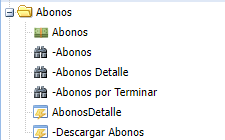
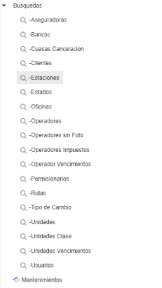
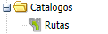

Perfiles y descripciones en plataforma Tracto Soft
Utiliza las flechas que estan el la parte de abajo a tu derecha para navegar en esta presentacion,
si te piertes y no sabes como regresar solo presiona la tecla ESC y selecciona la primer seccion que aparece
Indice de perfiles
- Gerencia
- Almacen
- Cobranza
- Compras
- Facturacion
- Facturacion y Remision
- Facturacion y Cobranza
- Solo Factura
- Contabilidad
- Gastos
- Liquidaciones
- Llantas
- Mantenimiento
- Monitoreo
- Trafico
- Trafico 2
- Domicilios CCTP
- Cliente
Da clic en el perfil que gustes consultar
Gerencia
Ve hacia abajo para ver los accesos que inluye este perfil
GERENCIA:
Este Perfil te va a permitir Crear documentos, Editarlos, Consultarlos, Eliminarlos, Hacer consultas de todo el catalogo, Acceder a preferencias y Editarlas, tienes acceso total a el sistema Tractosoft
Almacen
Ve hacia abajo para ir viendo los accesos que inluye este perfil
1.- MANTENIMIENTO:

Ofrece la consulta de Unidades con su respectiva consulta de revista y verificación, Incluye su apartado de catálogos, en la cual puedes dar de alta las Reparaciones por sección y el resto en solo consulta
2.- ALMACEN:
Podrás crear Productos, Productos clasificación, Crear vales de entrada y vales de salida y hacer consultas en: Productos, Productos Clasificación, Historial de Productos, Vales de Entrada, Vales de Salida Detalle Y generar Kardex por producto y Almacén.
3.- COMPRAS:
Te permitirá crear Órdenes de Compra y Compras, podrás Consultar lo siguiente: Requisición de Compra, Requisiciones Por Surtir, Requisiciones Surtidas, Requisiciones Por Autorizar, Requisiciones No Autorizadas, Requisiciones Canceladas, Órdenes de Compra por Surtir, Compras.
Regresar al indice de Perfiles
Cobranza
Ve hacia abajo para ir viendo los accesos que inluye este perfil
1.- BUSQUEDAS:
Aquí podras realizar consultas de Bancos, Tipos de cambio y consultar Clientes con opcion a modificar ciertos apartados como destinos y tarifas
2.- REMISIONES:
Este apartado tiene acceso para que crees Remisiones y hagas consultas de tus remisiones por Terminar, Facturar, Liquidar o Canceladas, pudiendo interacturar con ciertos apartados como descargar PDF o XML
3.- FACTURACIÓN:

En la seccion de Facturación podras crear Facturas, hacer consultas de tus Facturas Canceladas, por timbrar, o remisiones en facturas, al igual que descargarde forma masiva las facturas de una fecha "a" a una fecha "b"
4.- CUENTAS POR COBRAR:
El area de Cuentas por cobrar esta diseñada en este perfil para que sea de solo consulta sin acceso a modificar o eliminar, sin embargo podras generar reportes de cuentas por cobrar si es que lo llegas a necesitar
5.- ABONOS:
Abonos te ofrece crear complementos de pago y notas de credito, hacer consultas pero no editarlas ni eliminarlas
Regresar al indice de Perfiles
Compras
Ve hacia abajo para ir viendo los accesos que inluye este perfil
1.- ALMACEN:

En la seccion almacen podras hacer consultas en Productos, vales de entrada y salid, solo tendras acceso a manipular los vales de salida. Tendras acceso a generar un Kardex por producto.
2.- COMPRAS:
El apartado de compras podras crear y consultar Rubros y provedores, tendras permiso para crear Requisiciones de compra, Ordenes de compra y Compras, podras hacer sus respectivas consultas con interacciones limitadas de documento.
3.- CUENTAS X PAGAR:

En este rubro podras hacer sus respectivas consultas de Cuentas por Pagar con interacciones limitadas de documento.
4.- PAGOS:
En este rubro podras hacer sus respectivas consultas de Pagos con interacciones limitadas de documento.
Facturación
Ve hacia abajo para ir viendo los accesos que inluye este perfil
1.- BUSQUEDAS:
Con el apartado de Busquedas podras consultar Clientes, Tipo de Cambio, Domicilios CCPT, Validar RFC y solo con opcion a Editar y consultar tendras el apartado de Conceptos
2.- REMISIONES:
En esta segmento podras consultar Remisiones en ciertos "Status" como: Por Terminar, Por Facturar, Por Liquidar, Canceladas pero no podras editarlas, al igual podras importar Complemento Carta Porte Traslado en el apartado Importar CCTP.
3.- FACTURACIÓN:
El apartado de Facturación tiene el acceso a crear Facturas desde 0 y hacer sus respectivas consultas como Facturas, Canceladas, Remisiones en Facturas, Facturas timbradas y por timbrar sin opcion a editar. Podras descargar de forma masiva las facturas en el apartado de Descargar Facturas, así mismo importar XML, generar reportes de Facturas en sus diferentes Status.
4.- FACTURACIÓN 3.3:
En esta sub area de Facturación podras dar de alta Usos de CFDI, Formas de pago, ProdServicios y Claves de unidad con sus respectivas consultas y ediciones
5.- CUENTAS POR COBRAR:
Cuentas por cobrar solo es de uso de consulta y generar reportes, puedes encontrar los apartados Cuentas por cobrar, Cobranza vencida y Cuentas por cobrar Hoy, de la mano con esta area podras generar Reportes De antigüedad de Saldos, Envios y descargas de estados de cuentas, reportes de Cuentas por cobrar y Cuentas por cobrar por Clientes
Facturacion y Remision
Ve hacia abajo para ir viendo los accesos que inluye este perfil
1.- CATALOGOS:
La seccion de Catalogos te permitira crear Unidades y Consultar los datos de complemento carta porte traslado.
2.- BUSQUEDAS:
El area de busquedas te da acceso a la consulta y edicion de Unidades, asi mismo una matriz de domicilios en la cual podras consultar los codigos postales.
3.- REMISIONES:
La division de Remisiones tendras la posibilidad de crear Remisiones desde 0, asi como realizar consultas de ellas agregando filtro de busqueda en cuestion de su status como Por teminar, Por Facturar y Canceladas. Podras importar XML de solicitudes de tu cliente en Importar CCTP.
4.- FACTURACION:
El apartado de Facturacion tiene el acceso a crear Facturas desde 0 y hacer sus respectivas consultas como Facturas, Canceladas, Remisiones en Facturas, Facturas timbradas y por timbrar sin opcion a editar. Podras descargar de forma masiva las facturas en el apartado de Descargar Facturas.
Facturación y Cobranza
Ve hacia abajo para ir viendo los accesos que inluye este perfil
1.- BUSQUEDAS:

En esta seccion tendras acceso a las siguientes consultas:
Bancos, Clientes, Tipo de cambio, Busqueda de domicilios y Validar RFC, RECORDANDO QUE ESTO ES solo lectura y consulta.
Conceptos si disponible a Editar los conceptos ya existentes
2.- REMISIONES:

Esta seccion te va a permitir crear Remisiones desde 0 o importarlas en el apartado de Importar CCPT
Podras hacer las siguientes consultas, sin posibilidad de editar: Remisiones , Remisiones por teminar, Por facturar, por liquidar y ~Canceladas
3.- FACTURACIÓN:

En Facturación puedes crear facturas desde cero.
Podras consultar Facturas, Canceladas, Por timbrar, Timbradas y Remisiones en Facturas sin poder editar, tienes acceso a descargar facturas de forma masiva.
En el apartado Facturacion 3.3 podras Importar XML que te brinde tu cliente para facturar y descargar Reportes de detalles facturas
4.- CUENTAS POR COBRAR:

- Cuentas por cobrar solo es de uso de consulta y generar reportes, puedes encontrar los apartados Cuentas por cobrar, Cobranza vencida y Cuentas por cobrar Hoy
5.- ABONOS:

En el apartado de Abonos vas a poder crear complementos de pago y notas de crédito, aparte de usar las 3 consultas que son: Abonos, Abonos detalle y Abonos por terminar
Solo Factura
Ve hacia abajo para ir viendo los accesos que inluye este perfil
1.- CATALOGOS:
Te da el acceso a dar de alta en tu Catalogo lo siguiente: Aseguradoras, Bancos, Clientes, Causas de Cancelacio, Estados, Oficinas, Operadores, Permisionarios, Tipos de Cambio, Unidades, Unidades Clase, Conceptos y arrendataria, podras importar en formato .CSV clientes y destinos(solicitalo en tu grupo de soporte)
2.- BUSQUEDAS:

Podras consultar y editar los siguientes documentos: Causas de Cancelacion, Clientes, Estados, Oficinas, Operadores, PErmisionarios, Rutas, Tipo de Cambio, Unidades, Unidades Vencimientos, Conceptos y Arrendataria.
Teniendo de solo consulta lo siguiente: Aseguradoras, Bancos, Operador Vencimientos, Domicilio CCPT y Validar RFC
3.- REMISIONES:
Podras Crear, Editar y Eliminar Remisiones, consultarlas en sus diferentes status, descargar remisiones de forma masiva e Importar XML si tu cliente así lo reuqiere
4.- FACTURACION:

Podras Crear, Editar y Eliminar Facturas, consultarlas en sus diferentes status y descargar Facturas de forma masiva.
5.- CUENTAS POR COBRAR:
Cuentas por cobrar solo es de uso de consulta y generar reportes, puedes encontrar los apartados Cuentas por cobrar, Cobranza vencida y Cuentas por cobrar Hoy
6.- ABONOS:
En el apartado de Abonos vas a poder crear, consultar y editar complementos de pago y notas de crédito, aparte de usar las 3 consultas que son: Abonos, Abonos detalle y Abonos por terminar, generar reporte de Abonos detalle y descargar Abonos de forma masiva
7.- PREFERENCIAS:
Tendras un acceso a Preferencias y podras dar de alta Usos de CFDI, Formas de pago, ProdServicios, Claves de unidad y Tipos de pago con sus respectivas consultas y ediciones
Contabilidad
Ve hacia abajo para ir viendo los accesos que inluye este perfil
ACCESO TOTAL

En este perfil tendras acceso a todo el sistema Tracto Soft con la unica limitante que no podras eliminar nada de registros tanto de catalogos como folios, tendras que solicitarlo a Gerencia.
Regresar al indice de Perfiles
Gastos
Ve hacia abajo para ir viendo los accesos que inluye este perfil
1.- REMISIONES:
El area de Remisiones en este perfil te permitira hacer consulta y ciertas acciones en los documentos de Remision teniendo el acceso de consultarlos de la siguiente manera: Remisiones, Remisiones por Terminar, Remisiones por Facturar, Remisiones por Liquidar y Remisiones Canceladas
2.- GASTOS:
Este perfil te va a permitir hacer actualizaciones de Combustible, crear Gastos y Prestamos.
Te va apermitir hacer SOLO consultar e interaccion del documento de: Combustible, Gastos, Gastos por Aplicar Transferencia, Gastos Combustible, Rendimiento Segun Vales, Prestamos, Prestamos, Prestamos por Aplicar Transferencia, Prestamos x Liquidar, a la par podras crear Reportes de Combustible, no tienes derecho a editar ni eliminar los documentos pero si a interactuar con ellos.
3.- CASETAS:
En el apartado de Casetas podras dar de alta tus dispositivos IAVE y dar de alta Casetas sin IVA, al igual que podras consultarlos pero no tienes acceso a editar ni eliminar los documentos pero si a interactuar con ellos.
4.- LIQUIDACIONES:
Aquí podras hacer consultas de liquidaciones, podras interactuar agregando ciertas cosas en las lquidaciones pero no tendras acceso a su edicion total del documento ni a eliminarlo
Liquidaciones
Ve hacia abajo para ir viendo los accesos que inluye este perfil
1.- BUSQUEDAS:
Esta seccion de busqueda te da el acceso a Consultar y Editar las areas de Operadores
Y de SOLO consulta la Areas de Vencimiento de Licencias, Examenes Medicos, Rutas, Tipo de Cambio, Unidades, no tienes derecho a editar ni eliminar los documentos pero si a interactuar con ellos.
2.- REMISIONES:
Esta area es de solo consultas y visualizacion de documentos, no tienes derecho a editar ni eliminar los documentos pero si a interactuar con ellos.
3.- GASTOS:

Este perfil te va a permitir hacer actualizaciones de Combustible, crear Gastos y Prestamos.
Te va apermitir hacer SOLO consultar e interaccion del documento de: Combustible, Gastos, Gastos por Aplicar Transferencia, Gastos Combustible, Rendimiento Segun Vales, Gastos por Liquidar, Prestamos, Prestamos, Prestamos por Aplicar Transferencia, Prestamos x Liquidar, no tienes derecho a editar ni eliminar los documentos pero si a interactuar con ellos.
4.- CASETAS:

En el apartado de Casetas podras dar de alta tus dispositivos IAVE y dar de alta Casetas sin IVA, al igual que podras consultarlos pero no tienes acceso a editar ni eliminar los documentos pero si a interactuar con ellos.
5.- LIQUIDACIONES:

Aquí podras crear liquidaciones y hacer consultas de liquidaciones, podras interactuar agregando ciertas cosas en las lquidaciones pero no tendras acceso a su edicion total del documento ni a eliminarlo
Llantas
Ve hacia abajo para ir viendo los accesos que inluye este perfil
1.- CATALOGOS:
Aqui podras crear los siguientes datos: Aseguradoras, Bancos, Clientes, Causas de Cancelacion, Estaciones, Estados, Oficinas, Operadores, Permisionarios, Rutas, Tipo de Cambio, Unidades, Unidades Clase y Usuarios
2.-BUSQUEDA:
Estas áreas te permitirá hacer consultas y ciertas interacciones dentro de ellas pero no su edición al 100 %, Aseguradoras, Bancos, Causas Cancelación, Clientes, Estaciones, Estados, Oficinas, Operadores sin Foto, Operadores Impuestos, Operador Vencimientos, Permisionarios, Rutas, Tipo de Cambio, Unidades, Unidades Clase, Unidades Vencimientos, Usuarios.
Por otro lado Operadores si tienes permiso de modificar y consultar recordándote que en todo lo anterior no tienes derecho a editar ni eliminar los documentos pero si a interactuar con ellos
3.- MANTENIMIENTO:
El apartado de mantenimiento ofrece la creacion de Planeacion de Servicios y Mantenimientos. En modo consulta e inteccion con ciertos documentos y datos vas a encontrar los siguientes apartados: Unidades, Unidades Revista, Unidades Verificacion, Planeacion de Servicios, Planeacion de Servicios x Realizar, Planeaciones Vencidas, Mantenimiento, Mantenimientos Detalle y Mantenimientos x Terminar
4.- ALMACEN:
Podrás crear Productos, Productos clasificación, Crear vales de entrada y vales de salida y hacer consultas en: Productos, Productos Clasificación, Historial de Productos, Vales de Entrada y Vales de Salida Detalles
5.- COMPRAS:

Te permitirá dar de alta Rubros y Proveedores, crear Órdenes de Compra y Compras, podrás Consultar lo siguiente: Rubros, Proveedores, Orden de Compra por Surtir, Compras.
Regresar al indice de Perfiles
Mantenimiento
Ve hacia abajo para ir viendo los accesos que inluye este perfil
1 .- MANTENIMIENTO:
MAntenimiento te da el acceso a crear conceptos de Reparacion y Reparaciones Secciones, crear Planeacion de servicios y Mantenimientos, en cuestion de consultas podras consultar: Unidades, Unidades Revista y verificación, Mecanicos, Reparaciones y Reparaciones secciones.
Podras consultar planeaciones de servicios y manenimiento, recordando que las consultas no tendras el total acceso de eliminar y editar este se encuentra limitado a ciertos apartados
2 .- ALMACEN
En la seccion almacen podras hacer consultas en Productos, vales de entrada y salid, solo tendras acceso a manipular los vales de salida. Tendras acceso a generar un Kardex por producto y Kardex por Almacen
3 .- COMPRAS
Aqui podremos realizar consultas y ciertas manipulaciones de los documentos de los siguientes apartados: Rubros, Proveedores, Ordenes de compra, OdC por surtir y Compras
Monitoreo
Ve hacia abajo para ver los accesos que inluye este perfil
1.- REMISIONES:
En esta perfil el usuario tendra acceso a las siguiente funcionalid:
Consultar y tener ciertas acciones de tracking dentro de Remisiones por Terminar y Remisiones Detalle.
Podras igual generar Reporte de Tracking y Tracking 2 el cual es mas extenso que el primero mencionado
Trafico
Ve hacia abajo para ir viendo los accesos que inluye este perfil
1.- CATALOGOS:
Podras aquí dar de alta los siguientes datos: Rutas.
2.- BUSQUEDAS:
El apartado de busquedas en este perfil te da acceso a consutaltar Causas de Cancelacion, Clientes, Estados, Oficinas, Operadores: sin foto, impuestos, imms, Fast/visa; Vencimientos de Licencias, Examenes Medicos, Rutas, tipo de cambio, Busqueda Domicilios, Validar RFC.
Podras editar y consultar las siguientes ramas: Estaciones y Operadores.
3.- SOLICITUDES:
Esta seccion te va a permitir consultar Solicitudes x Atender.
Podras editar esas Solicitudes en el apartado 'Solicitudes'
4.- REMISIONES:
Tendras el acceso a crear Remisiones desde cero y podras consultar estas remisiones en ciertos "Status" como: Por Terminar, Por Facturar, Por Liquidar, Canceladas y Detalle pero no podras editarlas, al igual podras importar Complemento Carta Porte Traslado en el apartado Importar CCTP.
5.- GASTOS:
En esta zona podras crear documentos de Gastos y en cuestion de consulta sin acceso a edicion tienes los siguientes apartados: Combustible, Gastos: por Aplicar Transferencia, Combustible, Por Liquidar; Rendimiento segun Vales, Prestamos: por Aplicar Transferencia, por Liquidar.
6.- CASETAS:
En el sector de Casetas, podras consultar IAVE y las Casetas sin IVA que tienes registradas
7.- LIQUIDACIONES:
Esta division es de solo consulta sin permiso de edicion, estas consultas incluyen Liquidaciones por Operador, por Unidad, Liquidaciones Resultados de Unidades, Liquidaciones Resultado Operadores
8.- MANTENIMIENTO:
El sector de Mantenimiento te permitira editar tus Unidades dejandote solo hacer consulta sin edicion y con ciertas interacciones en Unidades Revista, Unidades verificación, Planeacion de Servicios, Planeaciones Vencidas, Mantenimientos, Mantenimientos Detalle, Mantenimientos por Terminar
Trafico 2
Ve hacia abajo para ir viendo los accesos que inluye este perfil
1.- CATALOGOS:
Podras aquí dar de alta los siguientes datos: Rutas, Operadores y Unidades.
2.- BUSQUEDAS:
El apartado de busquedas en este perfil te da acceso a consutaltar Causas de Cancelacion, Clientes, Estados, Oficinas, Operadores: sin foto, impuestos, imms, Fast/visa; Vencimientos de Licencias, Examenes Medicos, Rutas, tipo de cambio, Busqueda Domicilios, Validar RFC.
Podras editar y consultar las siguientes ramas: Estaciones, Operadores y Unidades.
3.- SOLICITUDES:
Esta seccion te va a permitir consultar Solicitudes x Atender.
Podras editar esas Solicitudes en el apartado 'Solicitudes'
4.- REMISIONES:
Tendras el acceso a crear Remisiones desde cero y podras consultar estas remisiones en ciertos "Status" como: Por Terminar, Por Facturar, Por Liquidar y Canceladas pero no podras editarlas, al igual podras importar Complemento Carta Porte Traslado en el apartado Importar CCTP.
5.- GASTOS:
En esta zona podras crear documentos de Gastos y en cuestion de consulta sin acceso a edicion tienes los siguientes apartados: Combustible, Gastos: por Aplicar Transferencia, Combustible, Por Liquidar; Rendimiento segun Vales, Prestamos: por Aplicar Transferencia, por Liquidar.
6.- CASETAS:
En el sector de Casetas, podras consultar IAVE y las Casetas sin IVA que tienes registradas
7.- LIQUIDACIONES:
Esta division es de solo consulta sin permiso de edicion, estas consultas incluyen Liquidaciones por Operador, por Unidad, Liquidaciones Resultados de Unidades, Liquidaciones Resultado Operadores
8.- MANTENIMIENTO:
El sector de Mantenimiento te permitira editar tus Unidades dejandote solo hacer consulta sin edicion y con ciertas interacciones en Unidades Revista, Unidades verificación, Planeacion de Servicios, Planeaciones Vencidas, Mantenimientos, Mantenimientos Detalle, Mantenimientos por Terminar
Domicilios CCPT
Ve hacia abajo para ver los accesos que inluye este perfil
1.- Busqueda Domicilios:

En esta perfil el usuario tendra acceso a las siguiente funcionalid:
Consultar los domicilios mediante el Codigo Postal en la matriz del SAT
Clientes
Ve hacia abajo para ver los accesos que inluye este perfil
1.- SOLICITUDES DE SERVICIO:
En esta perfil tu cliente tendra acceso a las siguientes funcionalidades:
Crear Solicitudes de Servicio, consultar Solicitudes x Periodo, Remisiones por Periodo, Facturas por Periodo y Estado de Cuenta